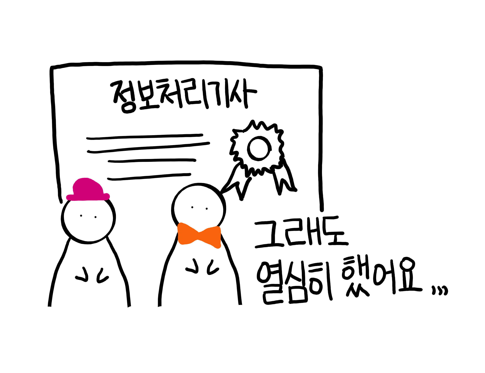
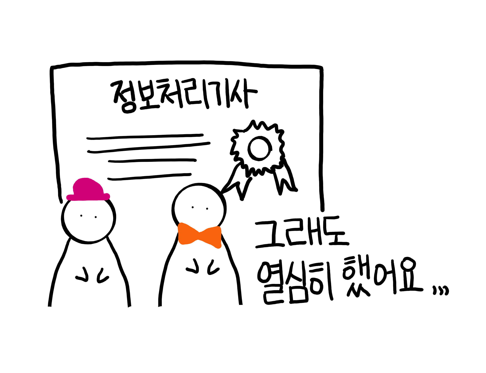

안녕하세요! 여대생활동단을 하고 있는 '오남매'팀입니다.
(꾸-벅)
안녕하세요~!! 팀에서 '젊음'을 맡고 있는 막내 임혜원입니다. 4학년 화석이긴 하지만 여기선 제일 어린 사람입니다^^ 걱정이 많고 눈물도 많아서 개복치적인 성향이 있지만 프론트개발자를 꿈꾸고 있고 항상 열심히 공부하는 중입니다:) 졸라맨 같은 이 그림은,,제가 그렸는데요. 그림전공은 아니라서,,양해부탁드립니다ㅋㅋ,,
아아 안녕하세요 혹시 제 차례인가요?ㅎㅎㅎㅎ저는 먼저 팀을 만들자고 한 유은지입니다~~~!!! 컴퓨터공학전공 이제 막 졸업을 보고 있는 4학년 할머니입니다. 저도 팀장처럼 프론트앤드에 관심이 많은 학생입니다. 열심히 프론트 앤드길만 파서 장인이 되려고 합니다^^ 이쁘게 봐주세염~~~ 제가 여기서 제일 키가 큰데 권력으로 키가 작아졌네요 ㅎㅎ
안녕하세요 늦게 합류한 청일점이자 카페인 중독자 강혁준입니다. 커피에 관해 진지한 편이고요. 돈을 많이 벌어 비싼 커피머신을 사는 것이 꿈입니다. 프론트엔드 직군에 흥미가 있어 리액트 공부를 열심히하고 있습니다 :>
4학년인 임혜원과 유은지는 여대생활동단 지원비를 통해 '정보처리기사' 자격증 필기 시험을 보고 합격했습니다! 실기는 최근에 봤는데요,, 합격여부는 아직 모르겠네요,, 하지만 열심히 했습니다ㅠㅠ 붙었으면 좋겠네요 ㅎㅎ
HTML, CSS, JS 등 스터디도 진행했습니다. 특히, 인프런이라는 사이트를 이용해서 강의를 듣고 진행도를 공유하는 등 활동을 진행했습니다.
또한, 일찍이 취업한 동기(17학번)의 도움으로 멘토링도 진행했습니다. 진로계획 및 취업정보에 대한 꿀팁에 대한 이야기를 나누며 많은 도움을 얻었습니다.
여대생활동단을 통해 스스로 공부하고 프로젝트를 진행할 수 있었습니다. 관심분야를 더 공부해서 실력있는 개발자가 되는 것이 꿈입니다 :) 감사합니다!